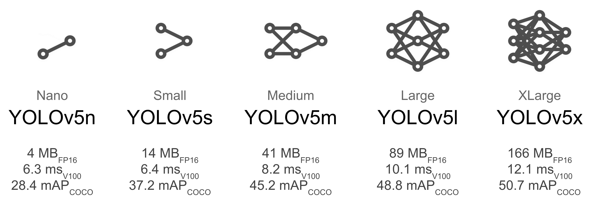
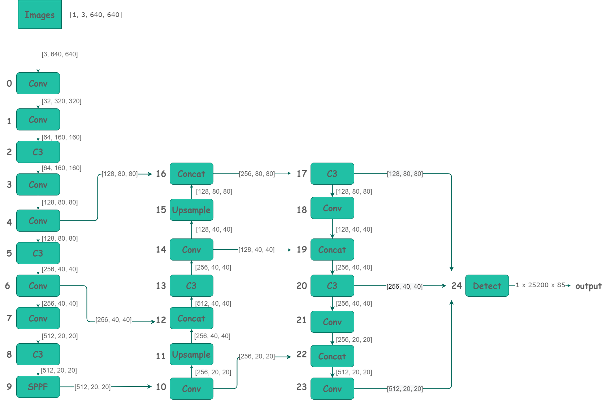

YOLOv5 网络结构解析
引言
YOLOv5针对不同大小（n, s, m, l, x）的网络整体架构都是一样的，只不过会在每个子模块中采用不同的深度和宽度，
分别应对yaml文件中的depth_multiple和width_multiple参数。
还需要注意一点，官方除了n, s, m, l, x版本外还有n6, s6, m6, l6, x6，区别在于后者是针对更大分辨率的图片比如1280x1280,
当然结构上也有些差异，前者只会下采样到32倍且采用3个预测特征层 , 而后者会下采样64倍，采用4个预测特征层。
本章将以 yolov5s为例 ，从配置文件 models/yolov5s.yaml 到 models/yolo.py 源码进行解读。
yolov5s.yaml文件内容:
nc: 80 # number of classes 数据集中的类别数
depth_multiple: 0.33 # model depth multiple 模型层数因子(用来调整网络的深度)
width_multiple: 0.50 # layer channel multiple 模型通道数因子(用来调整网络的宽度)
# 如何理解这个depth_multiple和width_multiple呢?它决定的是整个模型中的深度（层数）和宽度（通道数）,具体怎么调整的结合后面的backbone代码解释。
anchors: # 表示作用于当前特征图的Anchor大小为 xxx
# 9个anchor，其中P表示特征图的层级，P3/8该层特征图缩放为1/8,是第3层特征
- [10,13, 16,30, 33,23] # P3/8， 表示[10,13],[16,30], [33,23]3个anchor
- [30,61, 62,45, 59,119] # P4/16
- [116,90, 156,198, 373,326] # P5/32
# YOLOv5s v6.0 backbone
backbone:
# [from, number, module, args]
[[-1, 1, Conv, [64, 6, 2, 2]], # 0-P1/2
[-1, 1, Conv, [128, 3, 2]], # 1-P2/4
[-1, 3, C3, [128]],
[-1, 1, Conv, [256, 3, 2]], # 3-P3/8
[-1, 6, C3, [256]],
[-1, 1, Conv, [512, 3, 2]], # 5-P4/16
[-1, 9, C3, [512]],
[-1, 1, Conv, [1024, 3, 2]], # 7-P5/32
[-1, 3, C3, [1024]],
[-1, 1, SPPF, [1024, 5]], # 9
]
# YOLOv5s v6.0 head
head:
[[-1, 1, Conv, [512, 1, 1]],
[-1, 1, nn.Upsample, [None, 2, 'nearest']],
[[-1, 6], 1, Concat, [1]], # cat backbone P4
[-1, 3, C3, [512, False]], # 13
[-1, 1, Conv, [256, 1, 1]],
[-1, 1, nn.Upsample, [None, 2, 'nearest']],
[[-1, 4], 1, Concat, [1]], # cat backbone P3
[-1, 3, C3, [256, False]], # 17 (P3/8-small)
[-1, 1, Conv, [256, 3, 2]],
[[-1, 14], 1, Concat, [1]], # cat head P4
[-1, 3, C3, [512, False]], # 20 (P4/16-medium)
[-1, 1, Conv, [512, 3, 2]],
[[-1, 10], 1, Concat, [1]], # cat head P5
[-1, 3, C3, [1024, False]], # 23 (P5/32-large)
[[17, 20, 23], 1, Detect, [nc, anchors]], # Detect(P3, P4, P5)
]
anchors 解读
yolov5 初始化了 9 个 anchors，分别在三个特征图 （feature map）中使用，每个 feature map 的每个 grid cell 都有三个 anchor 进行预测。 分配规则：
-
尺度越大的 feature map 越靠前，相对原图的下采样率越小，感受野越小， 所以相对可以预测一些尺度比较小的物体(小目标)，分配到的 anchors 越小。
-
尺度越小的 feature map 越靠后，相对原图的下采样率越大，感受野越大， 所以可以预测一些尺度比较大的物体(大目标)，所以分配到的 anchors 越大。
-
即在小特征图（feature map）上检测大目标，中等大小的特征图上检测中等目标， 在大特征图上检测小目标。
backbone & head解读
[from, number, module, args] 参数
四个参数的意义分别是： 1. 第一个参数 from ：从哪一层获得输入，-1表示从上一层获得，[-1, 6]表示从上层和第6层两层获得。 2. 第二个参数 number：表示有几个相同的模块，如果为9则表示有9个相同的模块。 3. 第三个参数 module：模块的名称，这些模块写在common.py中。 4. 第四个参数 args：类的初始化参数，用于解析作为 moudle 的传入参数。
下面以第一个模块Conv 为例介绍下common.py中的模块
Conv 模块定义如下:
class Conv(nn.Module):
# Standard convolution
def __init__(self, c1, c2, k=1, s=1, p=None, g=1, act=True): # ch_in, ch_out, kernel, stride, padding, groups
"""
@Pargm c1: 输入通道数
@Pargm c2: 输出通道数
@Pargm k : 卷积核大小(kernel_size)
@Pargm s : 卷积步长 (stride)
@Pargm p : 特征图填充宽度 (padding)
@Pargm g : 控制分组，必须整除输入的通道数(保证输入的通道能被正确分组)
"""
super().__init__()
# https://oneflow.readthedocs.io/en/master/generated/oneflow.nn.Conv2d.html?highlight=Conv
self.conv = nn.Conv2d(c1, c2, k, s, autopad(k, p), groups=g, bias=False)
self.bn = nn.BatchNorm2d(c2)
self.act = nn.SiLU() if act is True else (act if isinstance(act, nn.Module) else nn.Identity())
def forward(self, x):
return self.act(self.bn(self.conv(x)))
def forward_fuse(self, x):
return self.act(self.conv(x))
比如上面把width_multiple设置为了0.5，那么第一个 [64, 6, 2, 2] 就会被解析为 [3,64*0.5=32,6,2,2]，其中第一个 3 为输入channel(因为输入)，32 为输出channel。
关于调整网络大小的详解说明
在yolo.py的256行 有对yaml 文件的nc,depth_multiple等参数读取，具体代码如下:
"width_multiple"参数的作用前面介绍args参数中已经介绍过了，那么"depth_multiple"又是什么作用呢？
在yolo.py的257行有对参数的具体定义：
其中 gd 就是depth_multiple的值，n的值就是backbone中列表的第二个参数：
根据公示(1) 很容易看出 gd 影响 n 的大小，从而影响网络的结构大小。
后面各层之间的模块数量、卷积核大小和数量等也都产生了变化，YOLOv5l 与 YOLOv5s 相比较起来训练参数的大小成倍数增长，
其模型的深度和宽度也会大很多，这就使得 YOLOv5l 的 精度值要比 YOLOv5s 好很多，因此在最终推理时的检测精度高，但是模型的推理速度更慢。
所以 YOLOv5 提供了不同的选择，如果想要追求推理速度可选用较小一些的模型如 YOLOv5s、YOLOv5m，如果想要追求精度更高对推理速度要求不高的可以选择其他两个稍大的模型。
如下面这张图：

来源:https://github.com/ultralytics/yolov5/wiki/Train-Custom-Data
Conv模块解读
网络结构预览
下面是根据yolov5s.yaml绘制的网络整体结构简化版。

-
详细的网络结构图：https://oneflow-static.oss-cn-beijing.aliyuncs.com/one-yolo/imgs/yolov5s.onnx.png 通过export.py导出的onnx格式，并通过 https://netron.app/ 网站导出的图片(模型导出 将在第八章介绍)。
-
模块组件右边参数 表示特征图的的形状，比如 在 第 一 层( Conv )输入 图片形状为 [ 3, 640, 640] ,关于这些参数，可以固定一张图片输入到网络并通过yolov5s.yaml的模型参数计算得到，并且可以在工程 models/yolo.py 通过代码进行print查看,详细数据可以参考附件表2.1。
yolo.py 解读
文件主要包含 三大部分 Detect类， Model类，和 parse_model 函数
可以通过 python models/yolo.py --cfg yolov5s.yaml 运行该脚本进行观察
parse_model函数解读
def parse_model(d, ch): # model_dict, input_channels(3)
"""用在下面Model模块中
解析模型文件(字典形式)，并搭建网络结构
这个函数其实主要做的就是: 更新当前层的args（参数）,计算c2（当前层的输出channel） =>
使用当前层的参数搭建当前层 =>
生成 layers + save
@Params d: model_dict 模型文件 字典形式 {dict:7} [yolov5s.yaml](https://github.com/Oneflow-Inc/one-yolov5/blob/main/models/yolov5s.yaml)中的6个元素 + ch
#Params ch: 记录模型每一层的输出channel 初始ch=[3] 后面会删除
@return nn.Sequential(*layers): 网络的每一层的层结构
@return sorted(save): 把所有层结构中from不是-1的值记下 并排序 [4, 6, 10, 14, 17, 20, 23]
"""
LOGGER.info(f"\n{'':>3}{'from':>18}{'n':>3}{'params':>10} {'module':<40}{'arguments':<30}")
# 读取d字典中的anchors和parameters(nc、depth_multiple、width_multiple)
anchors, nc, gd, gw = d['anchors'], d['nc'], d['depth_multiple'], d['width_multiple']
# na: number of anchors 每一个predict head上的anchor数 = 3
na = (len(anchors[0]) // 2) if isinstance(anchors, list) else anchors # number of anchors
no = na * (nc + 5) # number of outputs = anchors * (classes + 5) 每一个predict head层的输出channel
# 开始搭建网络
# layers: 保存每一层的层结构
# save: 记录下所有层结构中from中不是-1的层结构序号
# c2: 保存当前层的输出channel
layers, save, c2 = [], [], ch[-1] # layers, savelist, ch out
# enumerate() 函数用于将一个可遍历的数据对象(如列表、元组或字符串)组合为一个索引序列，同时列出数据和数据下标，一般用在 for 循环当中。
for i, (f, n, m, args) in enumerate(d['backbone'] + d['head']): # from, number, module, args
m = eval(m) if isinstance(m, str) else m # eval strings
for j, a in enumerate(args):
# args是一个列表，这一步把列表中的内容取出来
with contextlib.suppress(NameError):
args[j] = eval(a) if isinstance(a, str) else a # eval strings
# 将深度与深度因子相乘，计算层深度。深度最小为1.
n = n_ = max(round(n * gd), 1) if n > 1 else n # depth gain
# 如果当前的模块m在本项目定义的模块类型中，就可以处理这个模块
if m in (Conv, GhostConv, Bottleneck, GhostBottleneck, SPP, SPPF, DWConv, MixConv2d, Focus, CrossConv,
BottleneckCSP, C3, C3TR, C3SPP, C3Ghost, nn.ConvTranspose2d, DWConvTranspose2d, C3x):
# c1: 输入通道数 c2：输出通道数
c1, c2 = ch[f], args[0]
# 该层不是最后一层，则将通道数乘以宽度因子 也就是说，宽度因子作用于除了最后一层之外的所有层
if c2 != no: # if not output
# make_divisible的作用，使得原始的通道数乘以宽度因子之后取整到8的倍数，这样处理一般是让模型的并行性和推理性能更好。
c2 = make_divisible(c2 * gw, 8)
# 将前面的运算结果保存在args中，它也就是这个模块最终的输入参数。
args = [c1, c2, *args[1:]]
# 根据每层网络参数的不同，分别处理参数 具体各个类的参数是什么请参考它们的__init__方法这里不再详细解释了
if m in [BottleneckCSP, C3, C3TR, C3Ghost, C3x]:
# 这里的意思就是重复n次，比如conv这个模块重复n次，这个n 是上面算出来的 depth
args.insert(2, n) # number of repeats
n = 1
elif m is nn.BatchNorm2d:
args = [ch[f]]
elif m is Concat:
c2 = sum(ch[x] for x in f)
elif m is Detect:
args.append([ch[x] for x in f])
if isinstance(args[1], int): # number of anchors
args[1] = [list(range(args[1] * 2))] * len(f)
elif m is Contract:
c2 = ch[f] * args[0] ** 2
elif m is Expand:
c2 = ch[f] // args[0] ** 2
else:
c2 = ch[f]
# 构建整个网络模块 这里就是根据模块的重复次数n以及模块本身和它的参数来构建这个模块和参数对应的Module
m_ = nn.Sequential(*(m(*args) for _ in range(n))) if n > 1 else m(*args) # module
# 获取模块(module type)具体名例如 models.common.Conv , models.common.C3 , models.common.SPPF 等。
t = str(m)[8:-2].replace('__main__.', '') # replace函数作用是字符串"__main__"替换为''，在当前项目没有用到这个替换。
np = sum(x.numel() for x in m_.parameters()) # number params
m_.i, m_.f, m_.type, m_.np = i, f, t, np # attach index, 'from' index, type, number params
LOGGER.info(f'{i:>3}{str(f):>18}{n_:>3}{np:10.0f} {t:<40}{str(args):<30}') # print
"""
如果x不是-1，则将其保存在save列表中，表示该层需要保存特征图。
这里 x % i 与 x 等价例如在最后一层 :
f = [17,20,23] , i = 24
y = [ x % i for x in ([f] if isinstance(f, int) else f) if x != -1 ]
print(y) # [17, 20, 23]
# 写成x % i 可能因为：i - 1 = -1 % i (比如 f = [-1]，则 [x % i for x in f] 代表 [11] )
"""
save.extend(x % i for x in ([f] if isinstance(f, int) else f) if x != -1) # append to savelist
layers.append(m_)
if i == 0: # 如果是初次迭代，则新创建一个ch（因为形参ch在创建第一个网络模块时需要用到，所以创建网络模块之后再初始化ch）
ch = []
ch.append(c2)
# 将所有的层封装为nn.Sequential , 对保存的特征图排序
return nn.Sequential(*layers), sorted(save)
Model 类解读
class Model(nn.Module):
# YOLOv5 model
def __init__(self, cfg='[yolov5s.yaml](https://github.com/Oneflow-Inc/one-yolov5/blob/main/models/yolov5s.yaml)', ch=3, nc=None, anchors=None): # model, input channels, number of classes
super().__init__()
# 如果cfg已经是字典，则直接赋值，否则先加载cfg路径的文件为字典并赋值给self.yaml。
if isinstance(cfg, dict):
self.yaml = cfg # model dict
else: # is *.yaml 加载yaml模块
import yaml # for flow hub
self.yaml_file = Path(cfg).name
with open(cfg, encoding='ascii', errors='ignore') as f:
self.yaml = yaml.safe_load(f) # model dict 从yaml文件中加载出字典
# Define model
# ch: 输入通道数。 假如self.yaml有键‘ch’，则将该键对应的值赋给内部变量ch。假如没有‘ch’，则将形参ch赋给内部变量ch
ch = self.yaml['ch'] = self.yaml.get('ch', ch) # input channels
# 假如yaml中的nc和方法形参中的nc不一致，则覆盖yaml中的nc。
if nc and nc != self.yaml['nc']:
LOGGER.info(f"Overriding model.yaml nc={self.yaml['nc']} with nc={nc}")
self.yaml['nc'] = nc # override yaml value
if anchors: # anchors 先验框的配置
LOGGER.info(f'Overriding model.yaml anchors with anchors={anchors}')
self.yaml['anchors'] = round(anchors) # override yaml value
# 得到模型，以及对应的保存的特征图列表。
self.model, self.save = parse_model(deepcopy(self.yaml), ch=[ch]) # model, savelist
self.names = [str(i) for i in range(self.yaml['nc'])] # default names 初始化类名列表，默认为[0,1,2...]
# self.inplace=True 默认True 节省内存
self.inplace = self.yaml.get('inplace', True)
# Build strides, anchors 确定步长、步长对应的锚框
m = self.model[-1] # Detect()
if isinstance(m, Detect): # 检验模型的最后一层是Detect模块
s = 256 # 2x min stride
m.inplace = self.inplace
# 计算三个feature map下采样的倍率 [8, 16, 32]
m.stride = flow.tensor([s / x.shape[-2] for x in self.forward(flow.zeros(1, ch, s, s))]) # forward
# 检查anchor顺序与stride顺序是否一致 anchor的顺序应该是从小到大，这里排一下序
check_anchor_order(m) # must be in pixel-space (not grid-space)
# 对应的anchor进行缩放操作，原因：得到anchor在实际的特征图中的位置，因为加载的原始anchor大小是相对于原图的像素，但是经过卷积池化之后，特征图的长宽变小了。
m.anchors /= m.stride.view(-1, 1, 1)
self.stride = m.stride
self._initialize_biases() # only run once 初始化偏置
# Init weights, biases
# 调用oneflow_utils.py下initialize_weights初始化模型权重
initialize_weights(self)
self.info() # 打印模型信息
LOGGER.info('')
# 管理前向传播函数
def forward(self, x, augment=False, profile=False, visualize=False):
if augment:# 是否在测试时也使用数据增强 Test Time Augmentation(TTA)
return self._forward_augment(x) # augmented inference, None
return self._forward_once(x, profile, visualize) # single-scale inference, train
# 带数据增强的前向传播
def _forward_augment(self, x):
img_size = x.shape[-2:] # height, width
s = [1, 0.83, 0.67] # scales
f = [None, 3, None] # flips (2-ud, 3-lr)
y = [] # outputs
for si, fi in zip(s, f):
xi = scale_img(x.flip(fi) if fi else x, si, gs=int(self.stride.max()))
yi = self._forward_once(xi)[0] # forward
# cv2.imwrite(f'img_{si}.jpg', 255 * xi[0].cpu().numpy().transpose((1, 2, 0))[:, :, ::-1]) # save
yi = self._descale_pred(yi, fi, si, img_size)
y.append(yi)
y = self._clip_augmented(y) # clip augmented tails
return flow.cat(y, 1), None # augmented inference, train
# 前向传播具体实现
def _forward_once(self, x, profile=False, visualize=False):
"""
@params x: 输入图像
@params profile: True 可以做一些性能评估
@params feature_vis: True 可以做一些特征可视化
"""
# y: 存放着self.save=True的每一层的输出，因为后面的特征融合操作要用到这些特征图
y, dt = [], [] # outputs
# 前向推理每一层结构 m.i=index m.f=from m.type=类名 m.np=number of params
for m in self.model:
# if not from previous layer m.f=当前层的输入来自哪一层的输出 s的m.f都是-1
if m.f != -1: # if not from previous layer
x = y[m.f] if isinstance(m.f, int) else [x if j == -1 else y[j] for j in m.f] # from earlier layers
if profile:
self._profile_one_layer(m, x, dt)
x = m(x) # run
y.append(x if m.i in self.save else None) # save output
if visualize:
feature_visualization(x, m.type, m.i, save_dir=visualize)
return x
# 将推理结果恢复到原图图片尺寸(逆操作)
def _descale_pred(self, p, flips, scale, img_size):
# de-scale predictions following augmented inference (inverse operation)
"""用在上面的__init__函数上
将推理结果恢复到原图图片尺寸 Test Time Augmentation(TTA)中用到
de-scale predictions following augmented inference (inverse operation)
@params p: 推理结果
@params flips:
@params scale:
@params img_size:
"""
if self.inplace:
p[..., :4] /= scale # de-scale
if flips == 2:
p[..., 1] = img_size[0] - p[..., 1] # de-flip ud
elif flips == 3:
p[..., 0] = img_size[1] - p[..., 0] # de-flip lr
else:
x, y, wh = p[..., 0:1] / scale, p[..., 1:2] / scale, p[..., 2:4] / scale # de-scale
if flips == 2:
y = img_size[0] - y # de-flip ud
elif flips == 3:
x = img_size[1] - x # de-flip lr
p = flow.cat((x, y, wh, p[..., 4:]), -1)
return p
# 这个是TTA的时候对原图片进行裁剪，也是一种数据增强方式，用在TTA测试的时候。
def _clip_augmented(self, y):
# Clip YOLOv5 augmented inference tails
nl = self.model[-1].nl # number of detection layers (P3-P5)
g = sum(4 ** x for x in range(nl)) # grid points
e = 1 # exclude layer count
i = (y[0].shape[1] // g) * sum(4 ** x for x in range(e)) # indices
y[0] = y[0][:, :-i] # large
i = (y[-1].shape[1] // g) * sum(4 ** (nl - 1 - x) for x in range(e)) # indices
y[-1] = y[-1][:, i:] # small
return y
# 打印日志信息 前向推理时间
def _profile_one_layer(self, m, x, dt):
c = isinstance(m, Detect) # is final layer, copy input as inplace fix
o = thop.profile(m, inputs=(x.copy() if c else x,), verbose=False)[0] / 1E9 * 2 if thop else 0 # FLOPs
t = time_sync()
for _ in range(10):
m(x.copy() if c else x)
dt.append((time_sync() - t) * 100)
if m == self.model[0]:
LOGGER.info(f"{'time (ms)':>10s} {'GFLOPs':>10s} {'params':>10s} module")
LOGGER.info(f'{dt[-1]:10.2f} {o:10.2f} {m.np:10.0f} {m.type}')
if c:
LOGGER.info(f"{sum(dt):10.2f} {'-':>10s} {'-':>10s} Total")
# initialize biases into Detect(), cf is class frequency
def _initialize_biases(self, cf=None):
# https://arxiv.org/abs/1708.02002 section 3.3
# cf = flow.bincount(flow.tensor(np.concatenate(dataset.labels, 0)[:, 0]).long(), minlength=nc) + 1.
m = self.model[-1] # Detect() module
for mi, s in zip(m.m, m.stride): # from
b = mi.bias.view(m.na, -1).detach() # conv.bias(255) to (3,85)
b[:, 4] += math.log(8 / (640 / s) ** 2) # obj (8 objects per 640 image)
b[:, 5:] += math.log(0.6 / (m.nc - 0.999999)) if cf is None else flow.log(cf / cf.sum()) # cls
mi.bias = flow.nn.Parameter(b.view(-1), requires_grad=True)
# 打印模型中最后Detect层的偏置biases信息(也可以任选哪些层biases信息)
def _print_biases(self):
"""
打印模型中最后Detect模块里面的卷积层的偏置biases信息(也可以任选哪些层biases信息)
"""
m = self.model[-1] # Detect() module
for mi in m.m: # from
b = mi.bias.detach().view(m.na, -1).T # conv.bias(255) to (3,85)
LOGGER.info(
('%6g Conv2d.bias:' + '%10.3g' * 6) % (mi.weight.shape[1], *b[:5].mean(1).tolist(), b[5:].mean()))
def _print_weights(self):
"""
打印模型中Bottleneck层的权重参数weights信息(也可以任选哪些层weights信息)
"""
for m in self.model.modules():
if type(m) is Bottleneck:
LOGGER.info('%10.3g' % (m.w.detach().sigmoid() * 2)) # shortcut weights
# fuse()是用来进行conv和bn层合并，为了提速模型推理速度。
def fuse(self): # fuse model Conv2d() + BatchNorm2d() layers
"""用在detect.py、val.py
fuse model Conv2d() + BatchNorm2d() layers
调用oneflow_utils.py中的fuse_conv_and_bn函数和common.py中Conv模块的fuseforward函数
"""
LOGGER.info('Fusing layers... ')
for m in self.model.modules():
# 如果当前层是卷积层Conv且有bn结构, 那么就调用fuse_conv_and_bn函数讲conv和bn进行融合, 加速推理
if isinstance(m, (Conv, DWConv)) and hasattr(m, 'bn'):
m.conv = fuse_conv_and_bn(m.conv, m.bn) # update conv
delattr(m, 'bn') # remove batchnorm 移除bn remove batchnorm
m.forward = m.forward_fuse # update forward 更新前向传播 update forward (反向传播不用管, 因为这种推理只用在推理阶段)
self.info() # 打印conv+bn融合后的模型信息
return self
# 打印模型结构信息 在当前类__init__函数结尾处有调用
def info(self, verbose=False, img_size=640): # print model information
model_info(self, verbose, img_size)
def _apply(self, fn):
# Apply to(), cpu(), cuda(), half() to model tensors that are not parameters or registered buffers
self = super()._apply(fn)
m = self.model[-1] # Detect()
if isinstance(m, Detect):
m.stride = fn(m.stride)
m.grid = list(map(fn, m.grid))
if isinstance(m.anchor_grid, list):
m.anchor_grid = list(map(fn, m.anchor_grid))
return self
Detect类解读
class Detect(nn.Module):
"""
Detect模块是用来构建Detect层的，将输入feature map 通过一个卷积操作和公式计算到我们想要的shape, 为后面的计算损失或者NMS后处理作准备
"""
stride = None # strides computed during build
onnx_dynamic = False # ONNX export parameter
export = False # export mode
def __init__(self, nc=80, anchors=(), ch=(), inplace=True): # detection layer
super().__init__()
# nc:分类数量
self.nc = nc # number of classes
# no:每个anchor的输出数
self.no = nc + 5 # number of outputs per anchor
# nl:预测层数，此次为3
self.nl = len(anchors) # number of detection layers
# na:anchors的数量，此次为3
self.na = len(anchors[0]) // 2 # number of anchors
# grid:格子坐标系，左上角为(1,1),右下角为(input.w/stride,input.h/stride)
self.grid = [flow.zeros(1)] * self.nl # init grid
self.anchor_grid = [flow.zeros(1)] * self.nl # init anchor grid
# 写入缓存中，并命名为anchors
self.register_buffer('anchors', flow.tensor(anchors).float().view(self.nl, -1, 2)) # shape(nl,na,2)
# 将输出通过卷积到 self.no * self.na 的通道，达到全连接的作用
self.m = nn.ModuleList(nn.Conv2d(x, self.no * self.na, 1) for x in ch) # output conv
self.inplace = inplace # use inplace ops (e.g. slice assignment)
def forward(self, x):
z = [] # inference output
for i in range(self.nl):
x[i] = self.m[i](x[i]) # conv
bs, _, ny, nx = x[i].shape # x(bs,255,20,20) to x(bs,3,20,20,85)
x[i] = x[i].view(bs, self.na, self.no, ny, nx).permute(0, 1, 3, 4, 2).contiguous()
if not self.training: # inference
if self.onnx_dynamic or self.grid[i].shape[2:4] != x[i].shape[2:4]:
# 向前传播时需要将相对坐标转换到grid绝对坐标系中
self.grid[i], self.anchor_grid[i] = self._make_grid(nx, ny, i)
y = x[i].sigmoid()
if self.inplace:
y[..., 0:2] = (y[..., 0:2] * 2 + self.grid[i]) * self.stride[i] # xy
y[..., 2:4] = (y[..., 2:4] * 2) ** 2 * self.anchor_grid[i] # wh
else: # for YOLOv5 on AWS Inferentia https://github.com/ultralytics/yolov5/pull/2953
xy, wh, conf = y.split((2, 2, self.nc + 1), 4) # y.tensor_split((2, 4, 5), 4)
xy = (xy * 2 + self.grid[i]) * self.stride[i] # xy
wh = (wh * 2) ** 2 * self.anchor_grid[i] # wh
y = flow.cat((xy, wh, conf), 4)
z.append(y.view(bs, -1, self.no))
return x if self.training else (flow.cat(z, 1),) if self.export else (flow.cat(z, 1), x)
# 相对坐标转换到grid绝对坐标系
def _make_grid(self, nx=20, ny=20, i=0):
d = self.anchors[i].device
t = self.anchors[i].dtype
shape = 1, self.na, ny, nx, 2 # grid shape
y, x = flow.arange(ny, device=d, dtype=t), flow.arange(nx, device=d, dtype=t)
yv, xv = flow.meshgrid(y, x, indexing="ij")
grid = flow.stack((xv, yv), 2).expand(shape) - 0.5 # add grid offset, i.e. y = 2.0 * x - 0.5
anchor_grid = (self.anchors[i] * self.stride[i]).view((1, self.na, 1, 1, 2)).expand(shape)
return grid, anchor_grid
附件
表2.1 yolov5s.yaml解析表
| 层数 | form | moudule | arguments | input | output |
|---|---|---|---|---|---|
| 0 | -1 | Conv | [3, 32, 6, 2, 2] | [3, 640, 640] | [32, 320, 320] |
| 1 | -1 | Conv | [32, 64, 3, 2] | [32, 320, 320] | [64, 160, 160] |
| 2 | -1 | C3 | [64, 64, 1] | [64, 160, 160] | [64, 160, 160] |
| 3 | -1 | Conv | [64, 128, 3, 2] | [64, 160, 160] | [128, 80, 80] |
| 4 | -1 | C3 | [128, 128, 2] | [128, 80, 80] | [128, 80, 80] |
| 5 | -1 | Conv | [128, 256, 3, 2] | [128, 80, 80] | [256, 40, 40] |
| 6 | -1 | C3 | [256, 256, 3] | [256, 40, 40] | [256, 40, 40] |
| 7 | -1 | Conv | [256, 512, 3, 2] | [256, 40, 40] | [512, 20, 20] |
| 8 | -1 | C3 | [512, 512, 1] | [512, 20, 20] | [512, 20, 20] |
| 9 | -1 | SPPF | [512, 512, 5] | [512, 20, 20] | [512, 20, 20] |
| 10 | -1 | Conv | [512, 256, 1, 1] | [512, 20, 20] | [256, 20, 20] |
| 11 | -1 | Upsample | [None, 2, 'nearest'] | [256, 20, 20] | [256, 40, 40] |
| 12 | [-1, 6] | Concat | [1] | [1, 256, 40, 40],[1, 256, 40, 40] | [512, 40, 40] |
| 13 | -1 | C3 | [512, 256, 1, False] | [512, 40, 40] | [256, 40, 40] |
| 14 | -1 | Conv | [256, 128, 1, 1] | [256, 40, 40] | [128, 40, 40] |
| 15 | -1 | Upsample | [None, 2, 'nearest'] | [128, 40, 40] | [128, 80, 80] |
| 16 | [-1, 4] | Concat | [1] | [1, 128, 80, 80],[1, 128, 80, 80] | [256, 80, 80] |
| 17 | -1 | C3 | [256, 128, 1, False] | [256, 80, 80] | [128, 80, 80] |
| 18 | -1 | Conv | [128, 128, 3, 2] | [128, 80, 80] | [128, 40, 40] |
| 19 | [-1, 14] | Concat | [1] | [1, 128, 40, 40],[1, 128, 40, 40] | [256, 40, 40] |
| 20 | -1 | C3 | [256, 256, 1, False] | [256, 40, 40] | [256, 40, 40] |
| 21 | -1 | Conv | [256, 256, 3, 2] | [256, 40, 40] | [256, 20, 20] |
| 22 | [-1, 10] | Concat | [1] | [1, 256, 20, 20],[1, 256, 20, 20] | [512, 20, 20] |
| 23 | -1 | C3 | [512, 512, 1, False] | [512, 20, 20] | [512, 20, 20] |
| 24 | [17, 20, 23] | Detect | [80, [[10, 13, 16, 30, 33, 23], [30, 61, 62, 45, 59, 119], [116, 90, 156, 198, 373, 326]], [128, 256, 512]] | [1, 128, 80, 80],[1, 256, 40, 40],[1, 512, 20, 20] | [1, 3, 80, 80, 85],[1, 3, 40, 40, 85],[1, 3, 20, 20, 85] |
参考文章:
- https://zhuanlan.zhihu.com/p/436891962?ivk_sa=1025922q
- https://zhuanlan.zhihu.com/p/110204563
- https://www.it610.com/article/1550621248474648576.htm